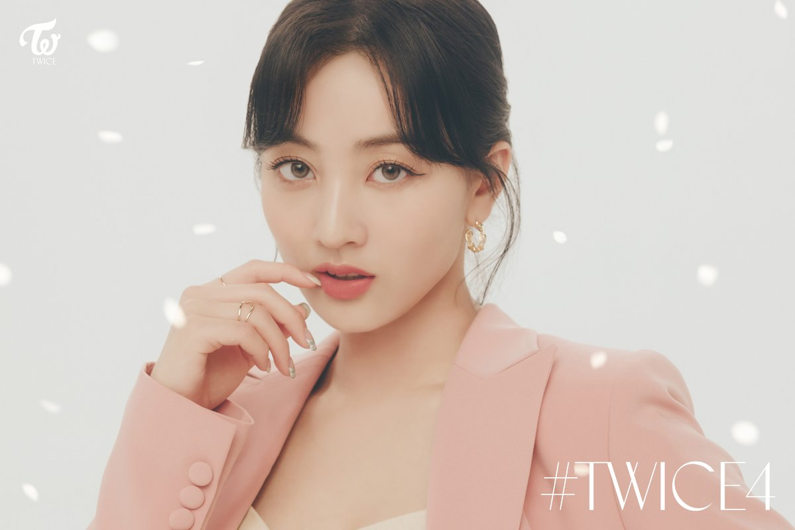
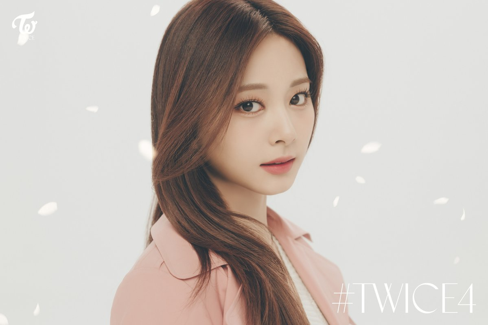
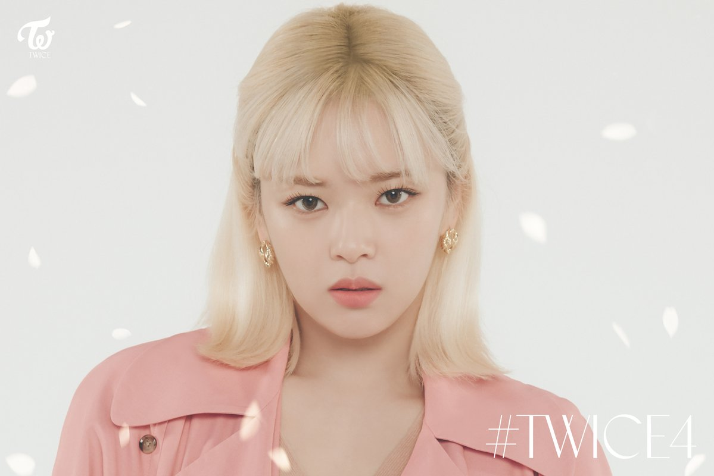
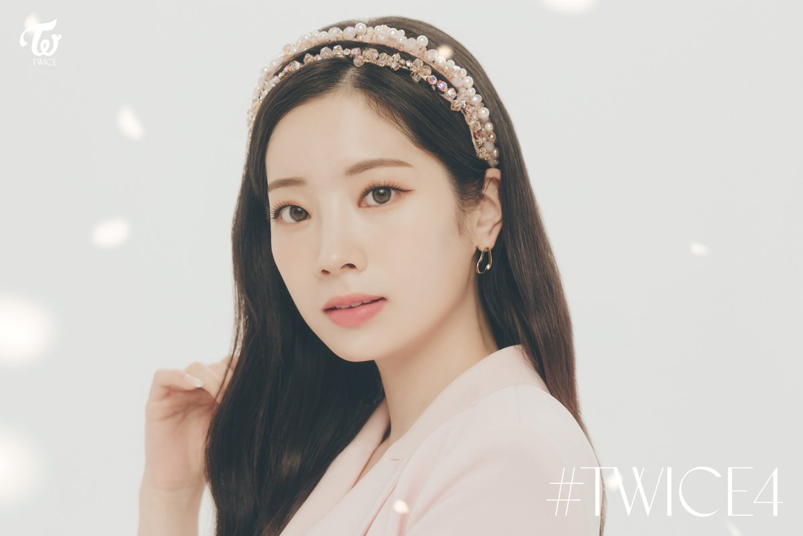
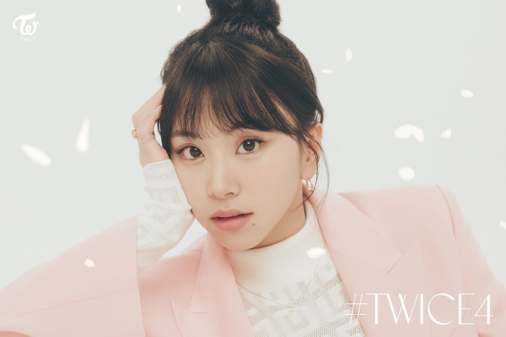

JIHYO
Stage Name: Jihyo (지효)
Birth Name: Park Ji Soo (박지수) but legalized her name to Park Ji Hyo (박지효)
Nationality: Korean
Position: Leader, Main Vocalist
Birthday: February 1, 1997
Zodiac sign: Aquarius
Official Height: 162 cm (5 ft 3¾ in) / Approx. Real Height: 160 cm (5’3″)
Official Weight: 56 kg (123 lbs) / Approx. Real Weight: 49 kg (108 lbs)
Blood Type: O
MBTI Type: ISFP-T
MINA
Stage Name: Mina (미나)
Birth Name: Myoui Mina (名井 南)
English Name: Sharon
Nationality: Japanese (She used to have American citizenship but she gave it up)
Position: Main Dancer, Sub Vocalist
Birthday: March 24, 1997
Zodiac Sign: Aries
Height: 163 cm (5’4″)
Weight: 46 kg (101 lbs)
Blood Type: A
MBTI Type: ISFP-T
Instagram: @green_mina0324 (Currently inactive)

TZUYU
Stage Name: Tzuyu (쯔위)
Birth Name: Chou Tzuyu (周子瑜)
Korean Name: Chou Tzu Yu (저우쯔위/주자유)
English Name: Sally
Nationality: Taiwanese
Position: Lead Dancer, Sub Vocalist, Visual, Maknae
Birthday: June 14, 1999
Zodiac Sign: Gemini
Height: 170 cm (5’7″)
Weight: 48 kg (106 lbs)
Blood Type: A
MBTI Type: ISFP-A
NAYEON
Stage Name: Nayeon (나연)
Birth Name: Im Na Yeon (임나연)
Nationality: Korean
Position: Lead Vocalist, Lead Dancer, Center, Face of the Group
Birthday: September 22, 1995
Zodiac Sign: Virgo
Height: 163 cm (5’4″)
Weight: 47 kg (104 lbs)
Blood Type: A
MBTI Type: ISTP-A

JEONGYEON
Stage Name: Jeongyeon (정연)
Birth Name: Yoo Kyung Wan (유경완), but she legalized her name to Yoo Jeong Yeon (유정연)
Nationality: Korean
Position: Lead Vocalist
Birthday: November 1, 1996
Zodiac Sign: Scorpio
Official Height: 169 cm (5’7″) / Real Height: 167 cm (5’6″)
Weight: 49.1 kg (108 lbs)
Blood Type: O
MBTI Type: ISFJ

MOMO
Stage Name: Momo (모모)
Birth Name: Hirai Momo (平井 もも)
Nationality: Japanese
Position: Main Dancer, Sub Vocalist, Sub Rapper
Birthday: November 9, 1996
Zodiac Sign: Scorpio
Official Height: 167 cm (5’6″) /Real Height: 163 cm (5’4″)
Weight: 48.5 kg (106 lbs)
Blood Type: A
MBTI Type: INFP-T
SANA
Stage Name: Sana (사나)
Birth Name: Minatozaki Sana (湊崎 紗夏)
Nationality: Japanese
Position: Sub Vocalist
Birthday: December 29, 1996
Zodiac Sign: Capricorn
Official Height: 168 cm (5’6″) / Approx. Real Height: 163 cm (5’4″)
Weight: 47 kg (104 lbs)
Blood Type: B
MBTI Type: ENFP
Twitter: @sanapomu

DAHYUN
Stage Name: Dahyun (다현)
Birth Name: Kim Da Hyun (김다현)
Nationality: Korean
Position: Lead Rapper, Sub Vocalist
Birthday: May 28, 1998
Zodiac Sign: Gemini
Official Height: 165 cm (5’5″) / Real Height: 161 cm (5’3″)
Weight: 48.9 kg (108 lbs)
Blood Type: O
MBTI Type: ISFJ-T

CHAEYOUNG
Stage Name: Chaeyoung (채영)
Birth Name: Son Chae Young (손채영)
Nationality: Korean
Position: Main Rapper, Sub Vocalist
Birthday: April 23, 1999
Zodiac Sign: Taurus
Official Height: 163 cm (5’4″) / Real Height: 158.9 cm (5’3″)*
Weight: 46 kg (101 lbs)
Blood Type: B
MBTI Type: INFP-T